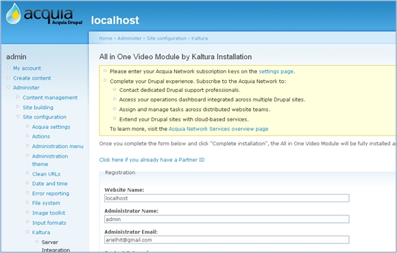
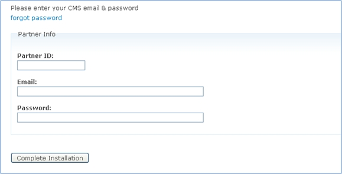

Community Edition Server
Community Edition Server
KalturaCE Home » Integrate » Drupal Integration Manual
What is it about?[top]
Your CE server can easily work with Drupal using Kaltura video extension for Drupal:
- Empowers Drupal websites with a full video experience
- Easy upload and import of videos, images and audio files from your computer, YouTube, MySpace, Flickr, record from webcam and more
- Total independence, content hosted and streamed on your KalturaCE server
- All metadata stored locally on your Drupal site - each media file is created as a Drupal Video Node
- CCK Field representation of rich media - to easily add rich media to existing content types
- Full integration with Drupal Views - including predefined views to ease integration
- Statistics collection – number of plays for each video collected and updated on the video node
- Drupal permissions integration – allows the administrator to decide who can view and who can edit content
- Drupal tags integration – metadata and tags from the Kaltura system are automatically included in the Drupal tags, and vice versa
- Drupal 6 and Drupal 5 compatible versions available
- Built-in online video editor - supports trimming videos, transitions, effects, soundtracks, remixing, reordering clips, overlays and collaborative editing
Can I see it in action?[top]
Take a look at the Kaltura Drupal demo site, where you can add content, and play around with the module.
How do I install the Drupal module?[top]
- Install Drupal –
this could be either on the same server where KalturaCE is running or on a server that has access to KalturaCE (inside the same LAN) - Install the Kaltura module for Drupal -
Download the Kaltura module for Drupal from http://drupal.org/project/kaltura and place it in the modules directory of Drupal. The Kaltura module depends on the following modules for full functionality, you can download and add them as well:
- CCK - http://drupal.org/project/cck
- Views - http://drupal.org/project/views
- JQuery Update - http://drupal.org/project/jquery_update
- Conduct the following configuration steps –
- Open the file kaltura_settings.php located in the Kaltura module under kaltura_client directory
- Find the line:
define('KalturaSettings_SERVER_URL', "http://www.kaltura.com"); - Replace the URL (http://www.kaltura.com) to the full URL of your KalturaCE installation (with the “KalturaCE” suffix).
For example, if your Kaltura CE server host is xxx.xxx.xxx.xxx The line would be:define('KalturaSettings_SERVER_URL', "http://xxx.xxx.xxx.xxx/kalturaCE "); - Add a file named crossdomain.xml to your server root directory. If your domain is domain.com. This file should be accessible in http://domain.com/crossdomain.xml inside this file should be the following content, where xxx.xxx.xxx.xxx is replaced by your KalturaCE server IP:
<?xml version="1.0"?> <!DOCTYPE cross-domain-policy SYSTEM "http://www.macromedia.com/xml/dtds/cross-domain-policy.dtd"> <cross-domain-policy> <site-control permitted-cross-domain-policies="master-only"/> <allow-access-from domain="localhost"/> <allow-access-from domain="127.0.0.1"/> <allow-access-from domain="*.kaltura.com"/> <allow-access-from domain=" xxx.xxx.xxx.xxx "/> <allow-http-request-headers-from domain="127.0.0.1" headers="*"/> <allow-http-request-headers-from domain="localhost" headers="*"/> <allow-http-request-headers-from domain="*.kaltura.com" headers="*"/> <allow-http-request-headers-from domain=" xxx.xxx.xxx.xxx " headers="*"/> </cross-domain-policy>
- Activate your module
- Browse to your Drupal Kaltura module activation form:

Click on the "Click here if you already have a partner ID" link
You will reach the following page:
 - Fill in the following details then click "Complete installation":
- Partner ID - 1 (this is a generic Partner ID since this is on your own server)
- Email - the email you provided during your KalturaCE registration
- Password- the password you provided during your KalturaCE registration
- Browse to your Drupal Kaltura module activation form:
Once installed, what can I do with the Kaltura Drupal module?[top]
The Kaltura Drupal video module provides you with the full capabilities of Kaltura’s open source video platform – designed specifically for Drupal. You can watch our Drupal module tutorial to learn how to create content, upload videos, remix content and more.